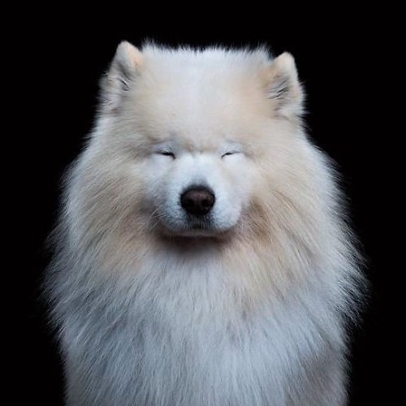

Computer Vision Project 2: Hybrid Images
Goal:
Create hybrid images using the approach described in the SIGGRAPH 2006 paper by Oliva, Torralba, and Schyns. Hybrid images are static images blended from two separate images that change in interpretation as a function of the viewing distance. The basic idea is that high frequency tends to dominate perception when it is available; however, at a distance, only the low frequency part of the signal can be seen. By blending the high frequency portion of one image with the low-frequency portion of another, you get a hybrid image that leads to different interpretations at different distances.Dataset:
To "cheat" somewhat (as encouraged in class) to produce the highest-quality hybrid images, instead of searching for naturalistic pictures of people and animals from the internet, I searched for specific types of images. My idea was to match the silhouettes of the images' subject as much as possible, to create the best, animorph-style hybrid image.
My first category of image was professional headshots of people. Headshots are relatively standardized, usually having a single color background with a centralized human subject. My sources included several portfolios of professional photographers and a few photos taken by the artist Ji-Yun.
My second category of image was portraits of animals. Similarly, for the
My sources included the work of several artists and photographers whose projects captured portraits of animals. One was the Animal Soul Project by Robert Bahou.
My third category of images consisted images I deliberately selected to be challenging to make a pretty hybrid image of---ones where the silhouettes don't line up at all.
Implementation:
Big idea: Filter the first picture with laplacian pyramid and the second one with Gaussian pyramid
Laplacian pyramids are calculated based on Gaussians. When we compress a picture by half, the picture loses half of its information. As we continue shrinking it, we get a pyramid of pictures with less information. When we amplify the pictures to their original size, the total information is constant; thus the image is blurred. Based on Gaussian pyramids, if we subtract the blurred image from the original picture, we will get lost information. The resulting image shows the high frequency parts of the image: lines, edges, etc. This process of substractions makes up the Laplacian pyramid.
Final Results
final image |
original 1 |
original 2 |
More results:
Idea: play with expressions
final image |
original image 1 |
original image 2 |
 |
Idea: Animal/human hybrids
final image |
original image 1 |
original image 2 |
|
Initial (bad) Results
crappy final image |
original image 1 |
original image 2 |
I really needed to crop amd hand-align the images better. So I tried harder.